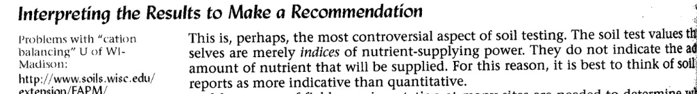
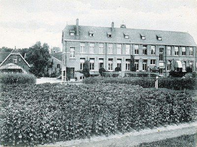
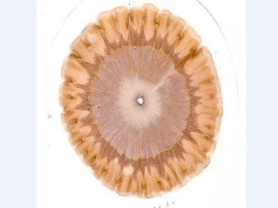

Bodemanalyses
Het is goed om af en toe eens een bodemanalyse uit te laten voeren. Heb er niet te hoge verwachtingen van. De ingewikkelde bodemprocessen die de bodemchemie en daarmee de voedingsstoffenvoorziening van planten bepalen kunnen nooit door een extractie van een bodemmonster op een enkel moment goed in beeld worden gebracht. Een bodemanalyses is wel een belangrijke aanvulling op visuele bodembeoordeling, eigen ervaring en bestaande kennis.
Wat is de plaats van de bodemanalyse**
De vragen hoe vaak een bodemanalyse laten uitvoerenen welk type analyse kiezen kunnen beter beantwoord worden als de plaats van een bodemanalye in het gehele bodembeheer goed bekend is.
Hoe ga je om met de resultaten van bodemanalyses? Hierover bestaat veel misverstand. Bodemlaboratoria geven in het algemeen bemestingsadviezen aan de hand van de analyses, maar zeggen er meestal niet bij dat het alleen maar indicaties zijn. Gedroogde grond wordt gemalen en een deel hiervan wordt geschud in een extractieoplossing gedurende bijvoorbeeld een uur. In het verkregen extract worden metingen gedaan. Het is onmogelijk dat deze metingen kunnen nabootsen wat bodemleven en plantenwortels gedurende het hele seizoen doen. Omdat bodemlaboratoria geen belang hebben om dit aan te geven blijft dit misverstand bestaan. Het gevolg is wel dat er in de praktijk veel onzekerheid ontstaat. Je hebt geen problemen met de groei, je bemest goed en toch zegt de bodemanalyse dat er iets mis is. Het toonaangevende handboek op het gebied van bodem en bemesting:The nature and properties of soils zegt over de plaats van de bodemanalyse:  De bodemanalyse is dus een indicatie. Belangrijk om bijvoorbeeld eens in de 10 jaar en bij grote eenzijdigheden wat vaker toe te passen, maar de bodemanalyse kan niet als basis voor de bemesting gebruikt worden. Naast de bodemanalyse kunnen ook plantsapmetingen worden uitgevoerd. Dit is alleen mogelijk bij meerjarige gewassen.
Naar welk laboratorium opsturen
Overweeg de keuze van een laboratorium goed. Het is goed om aan een eenmaal gemaakte keuze langere tijd vast te houden.Wanneer de bodemanalyse gebruikt wordt als indicatie en de bemestingsadviezen kritisch bekeken worden, heeft ieder laboratorium zijn waarde. Extremen komen bij alle laboratoria wel naar voren. Belangrijk bij de keuze is de vraag of het laboratorium ervaring heeft met de teelt waar het om gaat. De belangrijkste laboratoria in Nederland zijn Eurofins Agro Wageningen, Eurofins Agro Grauw, Koch Eurolab, Soil Tech, Eijkpunt, Gaia Bodemonderzoek en Soil Cares.
Agrarisch Laboratorium Noord Nederland (ALNN)
in Ferwert (Fr.) analyseert voer, mest en grond. ALNN is in 1996 opgericht. Vanuit Drachten (Fr.) verhuisde het laboratorium in 1997 naar Warga (Fr.) en in 2007 naar Ferwert. Info: www.ALNN.nl
Dumea Agro Advies in Ootmarsum
(Ov.) is ontstaan vanuit Terra Agribusiness BV, een Landbouwkundig onderzoek- en adviesbureau opgericht in 1996. Om voor de landbouw het hele traject van monstername, analyse en advies in eigen beheer te houden, heeft Terra Agribrusiness de samenwerking gezocht met het laboratorium van Dumea in Wijhe (Ov.). Daaruit is in 2016 Dumea Agro Advies ontstaan. Info: www.dumea-agroadvies.nl
Eurofins Agro Wageningen
(www.eurofins.nl, tot 1 oktober 2015: BLGG Wageningen)Na overname en invoegen van Altic en Lab Zeeuws Vlaanderen in Graauw is Eurofins Agro het grootste bodemanalyselaboratorium van Nederland. Een deel van de analyses wordt in het CaCl2 extract en een ander deel met NIR (Nabij infrarood) analyse. De CaCl2 extractiemethode is niet de beste extractiemethode, maar de beoordelingen gebeuren wel op basis van een zeer lange ervaring, namelijk sinds 1928. De beoordelingen van de laboratoriumanalyses werden vanouds uitgevoerd vanuit een zeer eenzijdig chemische kijk op de bodem. De rol van bodemleven, beworteling en bodemstructuur werden onderschat. Daar komt wel verandering in. Er is nu meer aandacht voor de niet makkelijk oplosbare voorraad die door het bodemleven beschikbaar gemaakt kan worden. Verder is er met ingang van oktober 2015 een samenwerking aangegaan met Aequator Groen & Ruimte en nu is het mogelijk om de laboratoriumanalyse aan te vullen met de visuele bodembeoordeling volgens de Bodemconditiescore. Eerst in Friesland en Groningen, daarna in het gehele land. Het is nu belangrijk dat er voldoende deskundigheid ontwikkeld wordt om de chemische bodemanalyse en de visuele bodembeoordeling te verbinden. In ieder geval zijn nu de voorwaarden geschapen om tot een echt goede bodembeoordeling en advisering te komen. Wij kijken hoopvol toe en houden u op de hoogte.Meer info: Eurofins Agro en Aequator
Groen Agro Control
is een zelfstandig laboratorium in Delfgauw (Z.-H.) is in 2018 gestart met de gebruikelijke analyses voor grond- en gewasonderzoek voor de akkerbouw, veehouderij, vollegrondsgroenteteelt en moestuin. Het bedrijf nam de activiteiten over van laboratorium Eijkpunt in de Hoeksche Waard. Interessant is de mogelijkheid om HWC (Hot Water Carbon) te laten meten. Dat is de hoeveelheid koolstofhoudende stoffen die in heet water oplosbaar zijn. De HWC geeft een indicatie voor de hoeveelheid voeding die voor het bodemleven beschikbaar is en zegt daarmee iets over de bodemkwaliteit. www.agrocontrol.nl.
Koch Eurolab (www.kochbodemtechniek.nl)
Hier ligt de nadruk sterk op de chemie. Zeer veel analyses zijn gebaseerd op veel ervaring sinds 1951. Ze denken mee over een biologische aanpak vanuit een zeer lange ervaring met vertaling van bodemanalyses naar de praktijk.
Novacropcontrol
voert geen bodemanalyses uit maar richt zich op plantsapmetingen. Deze worden naast meerjarige gewassen (fruit e.d.) ook toegepast op eenjarige. Dit laatste is ongebruikelijk omdat er voor eenjarige gewassen nog geen beoordelingssysteem is ontwikkeld. Voor een paar elementen is er mogelijk wel perspectief, maar er moet nog veel ontwikkelingswerk gedaan worden. Verschillen in gehalte door weer, wijze monstername, tijdstip monstername, er is geen gebrek maar lage gehalte komt door overmaat van andere elementen, wisselingen op korte termijn enz. maakt de methode onbetrouwbaar. Onderzoek naar de plantsapanalyse is uitgevoerd door het PCG in België en de WUR (Wim Voogt). Dit onderzoek leidde tot de conclusie dat de methode nog niet klaar is voor de praktijk. www.novacropcontrol.nl.
ROBA Laboratorium
in Deurne (N.-Br.) is gestart als klein adviesbureau in Helmond, dat later ook startte met een laboratorium ter ondersteuning van haar adviezen. Sinds 1999 zijn alle bedrijfsonderdelen samengevoegd op één locatie in Deurne. www.robagroep.nl
Soil Tech (www.soiltech.nl)
Soil Tech gebruikt de Amerikanse Mehlich 3 methode. Op zich is dit een relatief goede methode, maar nadeel is dat vrijwel alle analyses in eenzelfde extract worden uitgevoerd. Er is ook weinig ervaring met deze analyses in Nederland. Soiltech is vooral gespecialiseerd in aardbeien, enkele groenten en boomkwekerij. Ook is er onderzoek naar bodemleven, maar er is nog weinig koppeling tussen bodemleven, bodemstructuur en chemie. De adviezen zijn gericht op meststoffen die soms veel te duur zijn.
Eijkpunt (www.Eijkpunt.nl)
Eijkpunt voert de klassieke analyses uit: pH-CaCl2, organische stof, fosfaat (Pw), kalium, magnesium, afslibbaarheid en koolzure kalk. De advisering gebeurt volgens de bestaande adviesbases.
Soil Cares (www.soilcares.com)
Soil Cares werkt met een eenvoudige NIR veldscanner. De Scanner bepaalt de hoeveelheid stikstof, fosfor en kalium. Verder wordt de zuurgraad gemeten, de electrische weerstand en het organische stofgehalte. De waarde van deze metingen is duidelijk minder dan die van de klassieke laboratoriumanalyses, maar wanneer de metingen gekoppeld worden aan veel kennis over bemesting van de gewasen op de verschillende bodemtypes kan een bruikbare werkwijze ontstaan. Die koppeling gebeurt via de smartphone en na 10 minuten is er een advies. De methode is al wel toe te passen, maar nog niet geheel klaar,. Ze heeft wel perspectieven voor de toekomst.
Welk extractiemiddel
Sommige laboratoria analyseren alles in een enkel extract. Dat kan eigenlijk niet.Om de analysekosten te beperken bestaat de neiging om het aantal extracten bij een bodemanalyse te beperken. Bodemkundig gezien is dit geen goede ontwikkeling. Sommige laboratoria analyseren dus zelfs alles in eenzelfde extract. De bodemanalyse wordt dan wel een zeer globale indicatie.De extractie methode per element bekeken:
StikstofDe beschikbaarheid van stikstof is niet via een extractie te beoordelen omdat het bodemleven de vrijmaking domineert. Geprobeerd wordt wel om het NLV (stikstofleverend vermogen) als beoordeling van de stikstofbeschikbaarheid te gebruiken. In feite is het NLV het totaalgehalte aan stikstof per bodemtype gecorrigeerd. Het NLV blijkt zelden de werkelijke stikstoflevering goed aan te geven. Redenen zijn: stikstof is deels in zeer stabiele verbindingen in de grond aanwezig en komt niet beschikbaar, bovendien spelen bodemstructuur, waterhuishouding en temperatuur een belangrijke rol evenals de niet bemonsterde laag onder de bouwvoor.Stikstofsimulatiemodellen hebben dezelfde tekortkomingen, maar kunnen wel helpen de factoren die een rol spelen beter in beeld te krijgen. In de praktijk is het gratis model www.NDICEA.nl het best uitgetest.
Fosfor
In de EU worden 27 verschillende extractiemiddelen gebruikt. Dit grote aantal geeft al aan dat er geen eenstemmigheid is over de vraag welke extractiemethode de beschikbaarheid goed aangeeft. Dat is ook niet verwonderlijk omdat net als bij stikstof het bodemleven een overheersende rol speelt en bij fosfor komt de bodemstructuur daar nog extra bij. Alleen fosfor binnen 1 tot 2 mm van de wortel is voor de plant beschikbaar en de bodemstructuur is bij fosfor dus extra belangrijk. Bij een bodemanalyse wordt alle grond bemonsterd, maar weer niet de laag onder de bouwvoor. Het Blgg heeft gekozen voor een combinatie van P CaCl2 en P-Al, maar de gevonden relaties die zijn gevonden bij potproeven zijn zwak (zie Rotterdam-Los, 2009) en een degelijke vertaling naar een veldsituatie is eigenlijk niet mogelijk.
Kalium
Vaak wordt aangenomen dat in tegenstelling tot stikstof en fosfor, kalium wel met een bodemanalyse goed in beeld te krijgen is. Dat gaat bij kalium ook wel een stuk beter, maar ook hier spelen nalevering en bodemleven een rol. Als hulp om de nalevering in te schatten kan het 8M HCl extract gebruikt worden. Analyses van Gaia Bodemonderzoek in dit extract gedurende tientallen jaren wezen uit dat verzorging van de bodemvruchtbaarheid door mest of gewaskeuze tot een sterkere nalevering leidde.
Historie bodemanalyse Nederland
Op het Rijkslandbouwproefstation in Groningen (foto) werden in 1928 de eerste bodemanalyses uitgevoerd. Later werd het Blgg in Oosterbeek het belangrijkste laboratorium. De laatste tijd zijn er meerdere laboratoria bijgekomen.
Het eerste bodemlaboratorium in Nederland werd in 1928 opgericht in Groningen: pH, kalk, P-Al, P-citroenzuur, Pw en K-HCl waren de analyses. Ook in andere delen van Nederland werden vervolgens laboratoria opgericht. In 1948 concentreerden het laboratoriumwerk en de adviezen zich in Oosterbeek: het huidige Blgg. Er was steeds een nauwe band met het Instituut voor Bodemvruchtbaarheid (IB) in Haren bij Groningen. Dit instituut had nauwe contacten met de kunstmestindustrie en de industriële aanpak van het bemestingsvraagstuk stond centraal. Voor bodemstructuur en bodemleven was weinig aandacht. Eind jaren 90 werden een aantal extracten vervangen door het CaCl2 0,01 M extract. Dit is een weinig agressief extractiemiddel dat weinig zegt over de plantbeschikbaarheid van de meeste voedingsstoffen.

Het Rijkslandbouwproefstation in Groningen
Als reactie op de toenmalige aanpak van het Blgg werd in 1951 het Centraal Bodemkundig Bureau Rispens opgericht. Dit heet nu Koch Eurolab.
In 1981 werd op het Louis Bolk Instituut een bodemlaboratorium opgericht dat zich specifiek richtte op de biologische landbouw. Beschikbaarheid en voorraad aan voedingsstoffen en de biologische activiteit, gemeten met een bodemrespiratietest, staan hier centraal. Dit laboratorium is in 1991 voortgezet als Gaia Bodemonderzoek (www.gaiabodem.nl).
Aan het eind van de 20e eeuw nam de onvrede over het Blgg toe vanwege een aanpak die ver van de praktijk af stond en vanwege onduidelijkheid over de nieuwe analysemethoden. Nieuwe laboratoria startten: Laboratorium Zeeuws-Vlaanderen (voornamelijk dezelfde analyses als het Blgg, nu Eurofins/Lab Zeeuws-Vlaanderen), Altic (Spurway, verdund azijnzuur) en Soiltech (Mehlich 3 extract).
Historie bodemanalyse in de Verenigde Staten van Amerika De geschiedenis van de bodemanalyse in de VS maakt duidelijk waarom veel laboratoria nu alles in een enkel extract meten.
In de VS waren er aanvankelijk nauwelijks analyselaboratoria en deden de adviseurs het zelf thuis. Hierdoor was er veel aandacht voor eenvoudige multinutriënt analyses (alles in één extract). Het Morganextract was de eerste (NatriumAcetaat met azijnzuur op pH 4,8 gebracht). Nu wordt Mehlich 3 het meest gebruikt. Mehlich 3 bestaat uit een mengsel van azijnzuur voor de oplosbare voedingsstoffen, NH4F en NH4NO3 voor desorptie en EDTA voor chelatie. Dit extract wordt nu toegepast door Soiltech, Hortinova en Ecosys. Hortinova en Ecosys zijn adviesbureaus die ook adviezen geven rond bodemanalyses.
Chroma’s en Albrecht methode
Sommige analysemethoden zijn veelbelovend naar de toekomst toe, maar nu nog niet voldoende uitgewerkt.
Chroma’s
Bij de chroma-methode trekt een natronloogextract van grond in een met zilvernitraat geprepareerd filtreerpapier. Dit geeft een vormenrijk beeld. Potentieel interessant omdat het wat zegt over de humuskwaliteit. Probleem is dat oude humus, soms duizenden jaren oud, het beeld sterk domineert. De beoordeling van de beelden moet hierdoor per regio ontwikkeld worden en dat is nog niet gedaan. De beelden zijn wel te gebruiken om een beeld van het bodemtype te krijgen. De invloed van bodembeheer op de beelden vergt nader onderzoek.

Een chroma van een hele mooie rivierkleigrond in de Betuwe
De Albrecht-methode
Bij de Albrecht-methode wordt onderscheid gemaakt tussen direct oplosbare voedingsstoffen en aan humus en klei geadsorbeerde voedingsstoffen. Als ideaal wordt gezien dat het adsorptiecomplex voor 68% bezet is met calcium, 12% met magnesium en 2-5% met kalium. De methode wordt ook wel gebruikt om de bodemstructuur te sturen, hoewel Albrecht dit zelf niet heeft gedaan. Albrecht zag de bodem puur als een chemisch reactievat en had geen aandacht voor bodemleven en bodemstructuur. Dit beperkt de waarde van de Albrecht methode.
Ook bij de Albrecht-methode geldt dat deze nog per regio ontwikkeld moet worden. Eenzelfde beoordeling voor alle gronden is niet reëel. Dat leidt tot extreme giften aan voedingsstoffen die in de praktijk niet wenselijk zijn.